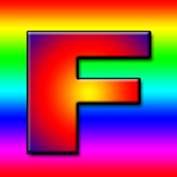
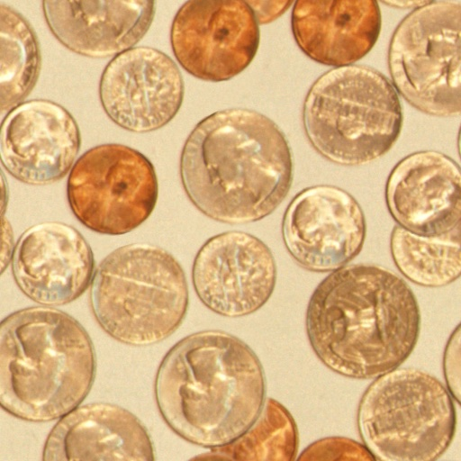
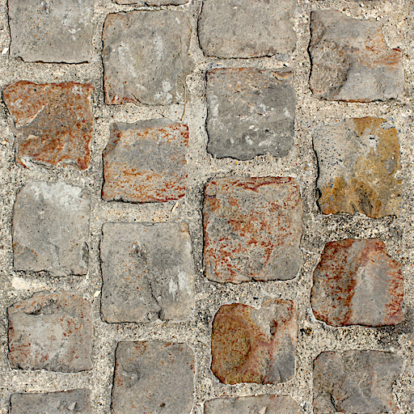

WebGPU 加载图像到纹理
我们之前在上一篇文章中介绍了使用纹理的一些基础知识。在本文中，我们将介绍如何将图像加载到纹理中，以及如何在 GPU 上生成 mipmaps。
在上一篇文章中，我们通过调用 device.createTexture 创建纹理，然后通过调用 device.queue.writeTexture 向纹理写入数据。device.queue 上还有另一个函数叫做 device.queue.copyExternalImageToTexture，它可以让我们将图像复制到纹理中。
它可以接受 ImageBitmap，所以让我们以上一篇文章中的 magFilter 示例为例，将其改为加载几张图像。
首先，我们需要一些代码来从图像获取 ImageBitmap
async function loadImageBitmap(url) {
const res = await fetch(url);
const blob = await res.blob();
return await createImageBitmap(blob, { colorSpaceConversion: 'none' });
}
上述代码使用图像的 URL 调用 fetch，返回一个 Response。然后我们用它加载一个 Blob，它不透明地表示图像文件的数据。接着我们将它传递给 createImageBitmap，这是一个标准的浏览器函数，用于创建 ImageBitmap。
我们传入 { colorSpaceConversion: 'none' } 来告诉浏览器不要应用任何色彩空间转换。是否让浏览器应用色彩空间由你决定。在 WebGPU 中，我们通常加载的是法线贴图或高度贴图之类的非颜色数据。在这些情况下，我们绝对不希望浏览器改动图像中的数据。
现在我们有了创建 ImageBitmap 的代码，接下来加载一张图像并创建一个相同大小的纹理。
我们将加载这张图像

我曾被教导过，带有 “F” 字母的纹理是一个很好的示例纹理，因为我们可以立即看到它的方向。
- const texture = device.createTexture({
- label: 'yellow F on red',
- size: [kTextureWidth, kTextureHeight],
- format: 'rgba8unorm',
- usage:
- GPUTextureUsage.TEXTURE_BINDING |
- GPUTextureUsage.COPY_DST,
- });
+ const url = 'resources/images/f-texture.png';
+ const source = await loadImageBitmap(url);
+ const texture = device.createTexture({
+ label: url,
+ format: 'rgba8unorm',
+ size: [source.width, source.height],
+ usage: GPUTextureUsage.TEXTURE_BINDING |
+ GPUTextureUsage.COPY_DST |
+ GPUTextureUsage.RENDER_ATTACHMENT,
+ });
请注意，copyExternalImageToTexture 要求我们包含
GPUTextureUsage.COPY_DST 和 GPUTextureUsage.RENDER_ATTACHMENT 使用标志。
然后我们可以将 ImageBitmap 复制到纹理中
- device.queue.writeTexture(
- { texture },
- textureData,
- { bytesPerRow: kTextureWidth * 4 },
- { width: kTextureWidth, height: kTextureHeight },
- );
+ device.queue.copyExternalImageToTexture(
+ { source, flipY: true },
+ { texture },
+ { width: source.width, height: source.height },
+ );
copyExternalImageToTexture 的参数依次是：源、目标、大小。对于源，我们可以指定 flipY: true 来在加载时翻转纹理。
这样就能工作了！
在 GPU 上生成 mips
在上一篇文章中我们也生成了 mip 贴图，但在那次操作中我们很容易获取到图像数据。当加载图像时，我们可以将图像绘制到 2D canvas 中，调用 getImageData 获取数据，最后生成 mips 并上传。这个过程会相当缓慢。而且这个过程可能是有损的，因为 Canvas 2D 的渲染行为被故意设计为依赖具体实现（即不同浏览器可能有不同的渲染结果）。
当我们生成 mip 级别时，我们做的是双线性插值，这正是 GPU 用 minFilter: linear 所做的事情。我们可以利用这个特性在 GPU 上生成 mip 级别
让我们修改上一篇文章中的 mipmapFilter 示例，改为加载图像并使用 GPU 生成 mips
首先，让我们修改创建纹理的代码以创建 mip 级别。我们需要知道要创建多少个级别，可以这样计算
const numMipLevels = (...sizes) => {
const maxSize = Math.max(...sizes);
return 1 + Math.log2(maxSize) | 0;
};
我们可以用一个或多个数字调用它，它会返回所需的 mips 数量。例如
numMipLevels(123, 456) 返回 9。
- level 0: 123, 456
- level 1: 61, 228
- level 2: 30, 114
- level 3: 15, 57
- level 4: 7, 28
- level 5: 3, 14
- level 6: 1, 7
- level 7: 1, 3
- level 8: 1, 1
9 个 mip 级别
Math.log2 告诉我们需要用 2 的多少次幂来表示我们的数字。换句话说，Math.log2(8) = 3，因为 23 = 8。另一种说法是，Math.log2 告诉我们可以将这个数除以 2 多少次。
Math.log2(8)
8 / 2 = 4
4 / 2 = 2
2 / 2 = 1
所以我们可以将 8 除以 2 三次。这正是计算需要生成多少个 mip 级别的方法。就是 Math.log2(最大尺寸) + 1。加 1 是因为原始尺寸的 mip 级别 0。
因此，我们现在可以创建正确数量的 mip 级别
const texture = device.createTexture({
label: url,
format: 'rgba8unorm',
mipLevelCount: numMipLevels(source.width, source.height),
size: [source.width, source.height],
usage: GPUTextureUsage.TEXTURE_BINDING |
GPUTextureUsage.COPY_DST |
GPUTextureUsage.RENDER_ATTACHMENT,
});
device.queue.copyExternalImageToTexture(
{ source, flipY: true, },
{ texture },
{ width: source.width, height: source.height },
);
为了生成下一个 mip 级别，我们会像之前一样绘制一个纹理四边形，只是使用 minFilter: linear 从现有的 mip 级别渲染到下一个级别。
这是代码
const generateMips = (() => {
let sampler;
let module;
const pipelineByFormat = {};
return function generateMips(device, texture) {
if (!module) {
module = device.createShaderModule({
label: 'textured quad shaders for mip level generation',
code: /* wgsl */ `
struct VSOutput {
@builtin(position) position: vec4f,
@location(0) texcoord: vec2f,
};
@vertex fn vs(
@builtin(vertex_index) vertexIndex : u32
) -> VSOutput {
let pos = array(
// 第一个三角形
vec2f( 0.0, 0.0), // 中心
vec2f( 1.0, 0.0), // 右侧，中心
vec2f( 0.0, 1.0), // 中心，顶部
// 第二个三角形
vec2f( 0.0, 1.0), // 中心，顶部
vec2f( 1.0, 0.0), // 右侧，中心
vec2f( 1.0, 1.0), // 右侧，顶部
);
var vsOutput: VSOutput;
let xy = pos[vertexIndex];
vsOutput.position = vec4f(xy * 2.0 - 1.0, 0.0, 1.0);
vsOutput.texcoord = vec2f(xy.x, 1.0 - xy.y);
return vsOutput;
}
@group(0) @binding(0) var ourSampler: sampler;
@group(0) @binding(1) var ourTexture: texture_2d<f32>;
@fragment fn fs(fsInput: VSOutput) -> @location(0) vec4f {
return textureSample(ourTexture, ourSampler, fsInput.texcoord);
}
`,
});
sampler = device.createSampler({
minFilter: 'linear',
});
}
if (!pipelineByFormat[texture.format]) {
pipelineByFormat[texture.format] = device.createRenderPipeline({
label: 'mip level generator pipeline',
layout: 'auto',
vertex: {
module,
},
fragment: {
module,
targets: [{ format: texture.format }],
},
});
}
const pipeline = pipelineByFormat[texture.format];
const encoder = device.createCommandEncoder({
label: 'mip gen encoder',
});
for (let baseMipLevel = 1; baseMipLevel < texture.mipLevelCount; ++baseMipLevel) {
const bindGroup = device.createBindGroup({
layout: pipeline.getBindGroupLayout(0),
entries: [
{ binding: 0, resource: sampler },
{
binding: 1,
resource: texture.createView({
baseMipLevel: baseMipLevel - 1,
mipLevelCount: 1,
}),
},
],
});
const renderPassDescriptor = {
label: 'our basic canvas renderPass',
colorAttachments: [
{
view: texture.createView({
baseMipLevel,
mipLevelCount: 1,
}),
loadOp: 'clear',
storeOp: 'store',
},
],
};
const pass = encoder.beginRenderPass(renderPassDescriptor);
pass.setPipeline(pipeline);
pass.setBindGroup(0, bindGroup);
pass.draw(6); // 调用顶点着色器 6 次
pass.end();
}
const commandBuffer = encoder.finish();
device.queue.submit([commandBuffer]);
};
})();
上面的代码看起来很长，但与我们之前所有纹理示例的代码几乎完全相同。变化的部分有：
-
我们创建了一个闭包来保存 3 个变量：
module、sampler、pipelineByFormat。 对于module和sampler，我们检查它们是否已被设置，如果没有，就创建一个GPUSShaderModule和一个GPUSampler，以便在以后继续使用。 -
我们有一对着色器，与迄今为止所有示例中的几乎完全相同。 唯一的区别是这部分
- vsOutput.position = uni.matrix * vec4f(xy, 0.0, 1.0); - vsOutput.texcoord = xy * vec2f(1, 50); + vsOutput.position = vec4f(xy * 2.0 - 1.0, 0.0, 1.0); + vsOutput.texcoord = vec2f(xy.x, 1.0 - xy.y);
我们着色器中的硬编码四边形位置数据从 0.0 到 1.0，因此照原样只会覆盖 我们绘制的四分之一纹理区域，就像之前的示例一样。我们需要它覆盖整个 区域，所以通过乘以 2 再减去 1，得到了一个从 -1,-1 到 +1,+1 的四边形。
我们还翻转了 Y 纹理坐标。这是因为在绘制到纹理时 +1, +1 在右上角， 但我们希望采样的纹理右上角在那里。被采样纹理的右上角坐标是 +1, 0。
-
我们有一个对象
pipelineByFormat，作为纹理格式的管线映射使用。 这是因为管线需要知道要使用的格式。 -
我们检查是否已经为特定格式创建了管线，如果没有就创建一个。
if (!pipelineByFormat[texture.format]) { pipelineByFormat[texture.format] = device.createRenderPipeline({ label: 'mip level generator pipeline', layout: 'auto', vertex: { module, }, fragment: { module, + targets: [{ format: texture.format }], }, }); } const pipeline = pipelineByFormat[texture.format];这里唯一的主要区别是
targets是从纹理的格式设置的， 不是从我们渲染到画布时使用的presentationFormat设置的。 -
最后，我们在
texture.createView中使用了一些参数。这是我们第一次在将纹理绑定到绑定组时以及在将纹理设置为颜色目标时使用
createView。 当你将纹理绑定到绑定组，或将纹理指定为渲染目标（设置colorTargets）时， 你可以直接传递纹理，也可以传递一个GPUTextureView。{ binding: resource: someTexture },或者
{ binding: resource: someTexture.createView(...) },直接使用纹理实际上是调用
createView时不传参数的简写。不传参数意味着你要访问整个纹理。 使用参数时，createView让你可以选择纹理的子集。 在本例中，我们使用createView来选择我们想要读取的 mip 级别。我们将其设置在 绑定组中。然后我们再次使用createView来选择在渲染通道描述符中要渲染到哪个 mip 级别。我们循环遍历每个需要生成的 mip 级别。 为包含数据的最新 mip 创建一个绑定组， 并将 renderPassDescriptor 设置为绘制到当前 mip 级别。然后我们为该特定 mip 级别编码一个渲染通道。 完成之后，所有 mip 就都填充好了。
for (let baseMipLevel = 1; baseMipLevel < texture.mipLevelCount; ++baseMipLevel) { const bindGroup = device.createBindGroup({ layout: pipeline.getBindGroupLayout(0), entries: [ { binding: 0, resource: sampler }, + { + binding: 1, + resource: texture.createView({ + baseMipLevel: baseMipLevel - 1, + mipLevelCount: 1, + }), + }, ], }); const renderPassDescriptor = { label: 'our basic canvas renderPass', colorAttachments: [ { + view: texture.createView({baseMipLevel, mipLevelCount: 1}), loadOp: 'clear', storeOp: 'store', }, ], }; const pass = encoder.beginRenderPass(renderPassDescriptor); pass.setPipeline(pipeline); pass.setBindGroup(0, bindGroup); pass.draw(6); // 调用顶点着色器 6 次 pass.end(); } const commandBuffer = encoder.finish(); device.queue.submit([commandBuffer]);
注意：此函数只处理 2D 纹理。 立方体贴图文章 介绍了如何将此函数扩展为处理 2D 数组纹理和立方体贴图。
简单的图像加载函数
让我们创建一些辅助函数来简化将图像加载到纹理并生成 mip 的过程。
下面这个函数会更新第一个 mip 级别，并可选地翻转图像。 如果图像有 mip 级别，则生成它们。
function copySourceToTexture(device, texture, source, {flipY} = {}) {
device.queue.copyExternalImageToTexture(
{ source, flipY, },
{ texture },
{ width: source.width, height: source.height },
);
if (texture.mipLevelCount > 1) {
generateMips(device, texture);
}
}
下面这个函数接收一个源（这里是 ImageBitmap），
创建一个匹配大小的纹理，然后调用前一个函数来填充数据。
function createTextureFromSource(device, source, options = {}) {
const texture = device.createTexture({
format: 'rgba8unorm',
* mipLevelCount: options.mips ? (source.width, source.height) : 1,
size: [source.width, source.height],
usage: GPUTextureUsage.TEXTURE_BINDING |
GPUTextureUsage.COPY_DST |
GPUTextureUsage.RENDER_ATTACHMENT,
});
copySourceToTexture(device, texture, source, options);
return texture;
}
下面这个函数接收一个 URL，将其作为 ImageBitmap 加载，
调用前一个函数来创建纹理并用图像内容填充它。
async function createTextureFromImage(device, url, options) {
const imgBitmap = await loadImageBitmap(url);
return createTextureFromSource(device, imgBitmap, options);
}
有了这些设置，mipmapFilter 示例中的主要改动就是
- const textures = [
- createTextureWithMips(createBlendedMipmap(), 'blended'),
- createTextureWithMips(createCheckedMipmap(), 'checker'),
- ];
+ const textures = await Promise.all([
+ await createTextureFromImage(device,
+ 'resources/images/f-texture.png', {mips: true, flipY: false}),
+ await createTextureFromImage(device,
+ 'resources/images/coins.jpg', {mips: true}),
+ await createTextureFromImage(device,
+ 'resources/images/Granite_paving_tileable_512x512.jpeg', {mips: true}),
+ ]);
上面的代码加载了上面提到的 F 纹理以及以下 2 张可平铺纹理：


{kind=link}
效果如下：
加载 Canvas
copyExternalImageToTexture 可以接受其他来源。另一种是 HTMLCanvasElement。
我们可以使用它在 2D canvas 中绘制内容，然后将其结果加载到 WebGPU 的纹理中。
当然，你可以用 WebGPU 绘制到纹理，然后在你渲染的其他内容中使用刚绘制的那个纹理。事实上，我们刚才就是这么做的——渲染到一个 mip 级别，然后用那个 mip 级别作为纹理附件渲染到下一个 mip 级别。
但是，有时候使用 2D canvas 可以让某些事情变得简单。2D canvas 有相对高级的 API。
首先，让我们制作某种 canvas 动画。
const size = 256;
const half = size / 2;
const ctx = document.createElement('canvas').getContext('2d');
ctx.canvas.width = size;
ctx.canvas.height = size;
const hsl = (h, s, l) => `hsl(${h * 360 | 0}, ${s * 100}%, ${l * 100 | 0}%)`;
function update2DCanvas(time) {
time *= 0.0001;
ctx.clearRect(0, 0, size, size);
ctx.save();
ctx.translate(half, half);
const num = 20;
for (let i = 0; i < num; ++i) {
ctx.fillStyle = hsl(i / num * 0.2 + time * 0.1, 1, i % 2 * 0.5);
ctx.fillRect(-half, -half, size, size);
ctx.rotate(time * 0.5);
ctx.scale(0.85, 0.85);
ctx.translate(size / 16, 0);
}
ctx.restore();
}
function render(time) {
update2DCanvas(time);
requestAnimationFrame(render);
}
requestAnimationFrame(render);
将 canvas 加载到 WebGPU 只需要对我们之前的示例做少量改动即可。
我们需要创建一个正确大小的纹理。最简单的方法就是使用上面编写的相同代码。
+ const texture = createTextureFromSource(device, ctx.canvas, {mips: true});
const textures = await Promise.all([
- await createTextureFromImage(device,
- 'resources/images/f-texture.png', {mips: true, flipY: false}),
- await createTextureFromImage(device,
- 'resources/images/coins.jpg', {mips: true}),
- await createTextureFromImage(device,
- 'resources/images/Granite_paving_tileable_512x512.jpeg', {mips: true}),
+ texture,
]);
然后我们需要切换到 requestAnimationFrame 循环，更新 2D canvas，
然后上传到 WebGPU。
- function render() {
+ function render(time) {
+ update2DCanvas(time);
+ copySourceToTexture(device, texture, ctx.canvas);
...
requestAnimationFrame(render);
}
requestAnimationFrame(render);
const observer = new ResizeObserver(entries => {
for (const entry of entries) {
const canvas = entry.target;
const width = entry.contentBoxSize[0].inlineSize;
const height = entry.contentBoxSize[0].blockSize;
canvas.width = Math.max(1, Math.min(width, device.limits.maxTextureDimension2D));
canvas.height = Math.max(1, Math.min(height, device.limits.maxTextureDimension2D));
- render();
}
});
observer.observe(canvas);
canvas.addEventListener('click', () => {
texNdx = (texNdx + 1) % textures.length;
- render();
});
这样我们就能上传 canvas 并为其生成 mip 级别了。
加载视频
用这种方式加载视频没有什么不同。我们可以创建一个 <video> 元素，
将其传递给与上一个示例中传递给 canvas 的相同函数，稍作调整它就能正常工作了。
这里有一段视频：
ImageBitmap 和 HTMLCanvasElement 的宽度和高度是 width 和 height 属性，但 HTMLVideoElement 的宽度和高度在 videoWidth 和 videoHeight 上。所以让我们更新代码来处理这个差异。
+ function getSourceSize(source) {
+ return [
+ source.videoWidth || source.width,
+ source.videoHeight || source.height,
+ ];
+ }
function copySourceToTexture(device, texture, source, {flipY} = {}) {
device.queue.copyExternalImageToTexture(
{ source, flipY, },
{ texture,
- { width: source.width, height: source.height },
+ getSourceSize(source),
);
if (texture.mipLevelCount > 1) {
generateMips(device, texture);
}
}
function createTextureFromSource(device, source, options = {}) {
+ const size = getSourceSize(source);
const texture = device.createTexture({
format: 'rgba8unorm',
- mipLevelCount: options.mips ? numMipLevels(source.width, source.height) : 1,
- size: [source.width, source.height],
+ mipLevelCount: options.mips ? numMipLevels(...size) : 1,
+ size,
usage: GPUTextureUsage.TEXTURE_BINDING |
GPUTextureUsage.COPY_DST |
GPUTextureUsage.RENDER_ATTACHMENT,
});
copySourceToTexture(device, texture, source, options);
return texture;
}
那么，让我们设置一个 video 元素。
const video = document.createElement('video');
video.muted = true;
video.loop = true;
video.preload = 'auto';
video.src = 'resources/videos/Golden_retriever_swimming_the_doggy_paddle-360-no-audio.webm';
const texture = createTextureFromSource(device, video, {mips: true});
并在渲染时更新它。
- function render(time) {
- update2DCanvas(time);
- copySourceToTexture(device, texture, ctx.canvas);
+ function render() {
+ copySourceToTexture(device, texture, video);
视频的一个复杂之处在于，我们需要等待视频开始播放后才能将其传递给 WebGPU。在现代浏览器中，我们可以通过调用 video.requestVideoFrameCallback 来实现这一点。每次有新帧可用时它都会调用我们，所以我们可以用它来了解何时至少有一帧可用。
作为后备方案，我们可以等待时间推进并祈祷 🙏，因为遗憾的是，老式浏览器很难知道何时可以安全使用视频 😅
+ function startPlayingAndWaitForVideo(video) {
+ return new Promise((resolve, reject) => {
+ video.addEventListener('error', reject);
+ if ('requestVideoFrameCallback' in video) {
+ video.requestVideoFrameCallback(resolve);
+ } else {
+ const timeWatcher = () => {
+ if (video.currentTime > 0) {
+ resolve();
+ } else {
+ requestAnimationFrame(timeWatcher);
+ }
+ };
+ timeWatcher();
+ }
+ video.play().catch(reject);
+ });
+ }
const video = document.createElement('video');
video.muted = true;
video.loop = true;
video.preload = 'auto';
video.src = 'resources/videos/Golden_retriever_swimming_the_doggy_paddle-360-no-audio.webm';
+ await startPlayingAndWaitForVideo(video);
const texture = createTextureFromSource(device, video, {mips: true});
另一个复杂之处是，我们需要等待用户与页面交互后才能开始播放视频 [1]。让我们添加一个带有播放按钮的 HTML。
<body>
<canvas></canvas>
+ <div id="start">
+ <div>▶️</div>
+ </div>
</body>
以及一些 CSS 来居中显示。
#start {
position: fixed;
left: 0;
top: 0;
width: 100%;
height: 100%;
display: flex;
justify-content: center;
align-items: center;
}
#start>div {
font-size: 200px;
cursor: pointer;
}
然后让我们编写一个函数来等待点击并隐藏播放按钮。
+ function waitForClick() {
+ return new Promise(resolve => {
+ window.addEventListener(
+ 'click',
+ () => {
+ document.querySelector('#start').style.display = 'none';
+ resolve();
+ },
+ { once: true });
+ });
+ }
const video = document.createElement('video');
video.muted = true;
video.loop = true;
video.preload = 'auto';
video.src = 'resources/videos/Golden_retriever_swimming_the_doggy_paddle-360-no-audio.webm';
+ await waitForClick();
await startPlayingAndWaitForVideo(video);
const texture = createTextureFromSource(device, video, {mips: true});
我们再添加一个暂停视频的等待。
const video = document.createElement('video');
video.muted = true;
video.loop = true;
video.preload = 'auto';
video.src = 'resources/videos/pexels-anna-bondarenko-5534310 (540p).mp4'; /* webgpufundamentals: url */
await waitForClick();
await startPlayingAndWaitForVideo(video);
+ canvas.addEventListener('click', () => {
+ if (video.paused) {
+ video.play();
+ } else {
+ video.pause();
+ }
+ });
有了这些，我们就能在纹理中使用视频了。
我们可以做的一个优化是：只有当视频发生变化时才更新纹理。
例如：
const video = document.createElement('video');
video.muted = true;
video.loop = true;
video.preload = 'auto';
video.src = 'resources/videos/Golden_retriever_swimming_the_doggy_paddle-360-no-audio.webm';
await waitForClick();
await startPlayingAndWaitForVideo(video);
+ let alwaysUpdateVideo = !('requestVideoFrameCallback' in video);
+ let haveNewVideoFrame = false;
+ if (!alwaysUpdateVideo) {
+ function recordHaveNewFrame() {
+ haveNewVideoFrame = true;
+ video.requestVideoFrameCallback(recordHaveNewFrame);
+ }
+ video.requestVideoFrameCallback(recordHaveNewFrame);
+ }
...
function render() {
+ if (alwaysUpdateVideo || haveNewVideoFrame) {
+ haveNewVideoFrame = false;
copySourceToTexture(device, texture, video);
+ }
...
通过这个改动，我们只为每一帧新视频进行更新。例如，在一台刷新率为 120 帧每秒的设备上，我们会以 120 帧每秒的速度绘制，因此动画、 相机移动等都会很流畅。但是，视频纹理本身只会以自身的帧率更新（例如 30fps）。
但是！WebGPU 有特殊的高效视频支持
我们将在另一篇文章中介绍它。
上述使用 device.query.copyExternalImageToTexture 的方式实际上是在复制数据。复制数据需要时间。例如，一段 4K 视频的分辨率通常为 3840 × 2160，
对于 rgba8unorm 格式来说是 31MB 的数据，每帧都需要复制。
外部纹理
让你可以直接使用视频的数据（无需复制），但需要使用不同的方法并有一些限制。
纹理图集
从上面的示例中，我们可以看到，要用纹理绘制内容，我们必须创建纹理、向其中放入数据、将纹理绑定到带有采样器的绑定组， 并在着色器中引用它。那么，如果我们想在同一个物体上绘制多种不同的纹理，该怎么做呢？比如说，我们有一把椅子，腿部和靠背是木头做的，但坐垫是布做的。
或者是一辆汽车，轮胎是橡胶的，车身是漆的，保险杠和轮毂盖是镀铬的。
如果不采取其他措施，你可能会认为我们必须绘制 2 次来完成这把椅子——一次用木头纹理绘制木头，一次用布纹理绘制坐垫。对于汽车，我们需要多次绘制，一次画轮胎，一次画车身，一次画保险杠，等等…
这样会导致性能变慢，因为每个物体都需要多次绘制调用。我们可以尝试通过在着色器中添加更多输入（2、3、4 张纹理）并为每张纹理添加纹理坐标来解决这个问题，但这样会不够灵活，而且效率也会很低，因为我们需要读取所有 4 张纹理并添加代码来在它们之间做出选择。
最常见的解决方案是使用所谓的纹理图集（Texture Atlas）。 纹理图集就是将多张图像放入一个纹理中的优雅说法。然后我们使用纹理坐标来选择每个部分应该放在哪里。
让我们用以下 6 张图像来包装一个立方体。
 |
使用 Photoshop 或 Photopea 等图像编辑软件，我们可以将所有 6 张图像放入一张图像中。

然后我们创建一个立方体，并提供纹理坐标，将图像的每个部分映射到立方体的特定面上。为了简单起见，我将所有 6 张图像以上面 4×2 的排列方式放入纹理中。因此，计算每个方格的纹理坐标应该相当容易。
上面的图表可能会让人困惑，因为它经常被建议将纹理坐标的 0,0 视为左下角。但实际上并没有"底部"这个概念。纹理坐标 0,0 只是引用纹理数据中的第一个像素。纹理数据中的第一个像素是图像的左上角。 如果你坚持 0,0 = 左下角的想法，那么我们的纹理坐标会被可视化成这样。它们仍然是相同的坐标。
下面是立方体的位置顶点和相应的纹理坐标：
function createCubeVertices() {
const vertexData = new Float32Array([
// 位置 | 纹理坐标
//---------+----------------------
// 前面 选择左上角的图像
-1, 1, 1, 0 , 0 ,
-1, -1, 1, 0 , 0.5,
1, 1, 1, 0.25, 0 ,
1, -1, 1, 0.25, 0.5,
// 右面 选择顶部中间的图像
1, 1, -1, 0.25, 0 ,
1, 1, 1, 0.5 , 0 ,
1, -1, -1, 0.25, 0.5,
1, -1, 1, 0.5 , 0.5,
// 后面 选择右上角的图像
1, 1, -1, 0.5 , 0 ,
1, -1, -1, 0.5 , 0.5,
-1, 1, -1, 0.75, 0 ,
-1, -1, -1, 0.75, 0.5,
// 左面 选择左下角的图像
-1, 1, 1, 0 , 0.5,
-1, 1, -1, 0.25, 0.5,
-1, -1, 1, 0 , 1 ,
-1, -1, -1, 0.25, 1 ,
// 底面 选择底部中间的图像
1, -1, 1, 0.25, 0.5,
-1, -1, 1, 0.5 , 0.5,
1, -1, -1, 0.25, 1 ,
-1, -1, -1, 0.5 , 1 ,
// 顶面 选择右下角的图像
-1, 1, 1, 0.5 , 0.5,
1, 1, 1, 0.75, 0.5,
-1, 1, -1, 0.5 , 1 ,
1, 1, -1, 0.75, 1 ,
]);
const indexData = new Uint16Array([
0, 1, 2, 2, 1, 3, // 前面
4, 5, 6, 6, 5, 7, // 右面
8, 9, 10, 10, 9, 11, // 后面
12, 13, 14, 14, 13, 15, // 左面
16, 17, 18, 18, 17, 19, // 底面
20, 21, 22, 22, 21, 23, // 顶面
]);
return {
vertexData,
indexData,
numVertices: indexData.length,
};
}
为了制作这个示例，我们要从相机文章中的一个示例开始。 如果你还没有读过这篇文章，可以先读一读，以及它所属系列中的其他文章，学习如何做 3D。 目前，重要的一点是：和上面一样，我们从顶点着色器输出位置和纹理坐标，并在片段着色器中使用它们从纹理中查找值。那么，根据上面的内容，以下是从相机示例的着色器开始所需的主要改动。
struct Uniforms {
matrix: mat4x4f,
};
struct Vertex {
@location(0) position: vec4f,
- @location(1) color: vec4f,
+ @location(1) texcoord: vec2f,
};
struct VSOutput {
@builtin(position) position: vec4f,
- @location(0) color: vec4f,
+ @location(0) texcoord: vec2f,
};
@group(0) @binding(0) var<uniform> uni: Uniforms;
+@group(0) @binding(1) var ourSampler: sampler;
+@group(0) @binding(2) var ourTexture: texture_2d<f32>;
@vertex fn vs(vert: Vertex) -> VSOutput {
var vsOut: VSOutput;
vsOut.position = uni.matrix * vert.position;
- vsOut.color = vert.color;
+ vsOut.texcoord = vert.texcoord;
return vsOut;
}
@fragment fn fs(vsOut: VSOutput) -> @location(0) vec4f {
- return vsOut.color;
+ return textureSample(ourTexture, ourSampler, vsOut.texcoord);
}
我们所做的只是将每个顶点的颜色切换为每个顶点的纹理坐标，就像上面一样。然后我们在片段着色器中像上面一样使用它。
在 JavaScript 中，我们需要将该示例的管线从接收颜色改为接收纹理坐标。
const pipeline = device.createRenderPipeline({
label: '2 attributes',
layout: 'auto',
vertex: {
module,
buffers: [
{
- arrayStride: (4) * 4, // (3) 个浮点数每个 4 字节 + 一个 4 字节的颜色
+ arrayStride: (3 + 2) * 4, // (3+2) 个浮点数每个 4 字节
attributes: [
{shaderLocation: 0, offset: 0, format: 'float32x3'}, // 位置
- {shaderLocation: 1, offset: 12, format: 'unorm8x4'}, // 颜色
+ {shaderLocation: 1, offset: 12, format: 'float32x2'}, // 纹理坐标
],
},
],
},
fragment: {
module,
targets: [{ format: presentationFormat }],
},
primitive: {
cullMode: 'back',
},
depthStencil: {
depthWriteEnabled: true,
depthCompare: 'less',
format: 'depth24plus',
},
});
为了保持数据较小，我们将使用索引，就像我们在顶点缓冲区文章中介绍的那样。
- const { vertexData, numVertices } = createFVertices();
+ const { vertexData, indexData, numVertices } = createCubeVertices();
const vertexBuffer = device.createBuffer({
label: 'vertex buffer vertices',
size: vertexData.byteLength,
usage: GPUBufferUsage.VERTEX | GPUBufferUsage.COPY_DST,
});
device.queue.writeBuffer(vertexBuffer, 0, vertexData);
+ const indexBuffer = device.createBuffer({
+ label: 'index buffer',
+ size: indexData.byteLength,
+ usage: GPUBufferUsage.INDEX | GPUBufferUsage.COPY_DST,
+ });
+ device.queue.writeBuffer(indexBuffer, 0, indexData);
我们需要将所有纹理加载和 mip 生成代码复制到这个示例中，然后使用它来加载纹理图集图像。我们还需要创建一个采样器并将其添加到绑定组中。
+ const texture = await createTextureFromImage(device,
+ 'resources/images/noodles.jpg', {mips: true, flipY: false});
+
+ const sampler = device.createSampler({
+ magFilter: 'linear',
+ minFilter: 'linear',
+ mipmapFilter: 'linear',
+ });
const bindGroup = device.createBindGroup({
label: 'bind group for object',
layout: pipeline.getBindGroupLayout(0),
entries: [
{ binding: 0, resource: uniformBuffer },
+ { binding: 1, resource: sampler },
+ { binding: 2, resource: texture },
],
});
我们需要进行一些 3D 数学运算来设置绘制 3D 的矩阵。（同样，请参阅相机文章了解 3D 数学的详细信息。）
const degToRad = d => d * Math.PI / 180;
const settings = {
rotation: [degToRad(20), degToRad(25), degToRad(0)],
};
const radToDegOptions = { min: -360, max: 360, step: 1, converters: GUI.converters.radToDeg };
const gui = new GUI();
gui.onChange(render);
gui.add(settings.rotation, '0', radToDegOptions).name('rotation.x');
gui.add(settings.rotation, '1', radToDegOptions).name('rotation.y');
gui.add(settings.rotation, '2', radToDegOptions).name('rotation.z');
...
function render() {
...
const aspect = canvas.clientWidth / canvas.clientHeight;
mat4.perspective(
60 * Math.PI / 180,
aspect,
0.1, // zNear
10, // zFar
matrixValue,
);
const view = mat4.lookAt(
[0, 1, 5], // 相机位置
[0, 0, 0], // 目标
[0, 1, 0], // 上方向
);
mat4.multiply(matrixValue, view, matrixValue);
mat4.rotateX(matrixValue, settings.rotation[0], matrixValue);
mat4.rotateY(matrixValue, settings.rotation[1], matrixValue);
mat4.rotateZ(matrixValue, settings.rotation[2], matrixValue);
// 将 uniform 值上传到 uniform 缓冲区
device.queue.writeBuffer(uniformBuffer, 0, uniformValues);
在渲染时我们需要使用索引绘制。
const encoder = device.createCommandEncoder();
const pass = encoder.beginRenderPass(renderPassDescriptor);
pass.setPipeline(pipeline);
pass.setVertexBuffer(0, vertexBuffer);
+ pass.setIndexBuffer(indexBuffer, 'uint16');
...
pass.setBindGroup(0, bindGroup);
- pass.draw(numVertices);
+ pass.drawIndexed(numVertices);
pass.end();
这样我们就得到了一个立方体，每个面都有不同的图像，但只使用了一张纹理。
使用纹理图集的好处是：只需要加载一张纹理，着色器保持简单（只需引用一张纹理），而且只需要一次绘制调用就能绘制形状，而不是像将图像分开保存时那样每张纹理需要一次绘制调用。
有多种方法可以获取视频（通常不带音频）， 使其自动播放而无需等待用户与页面交互。这些方法似乎会随着时间变化，所以我们这里不讨论解决方案。 ↩︎